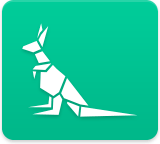
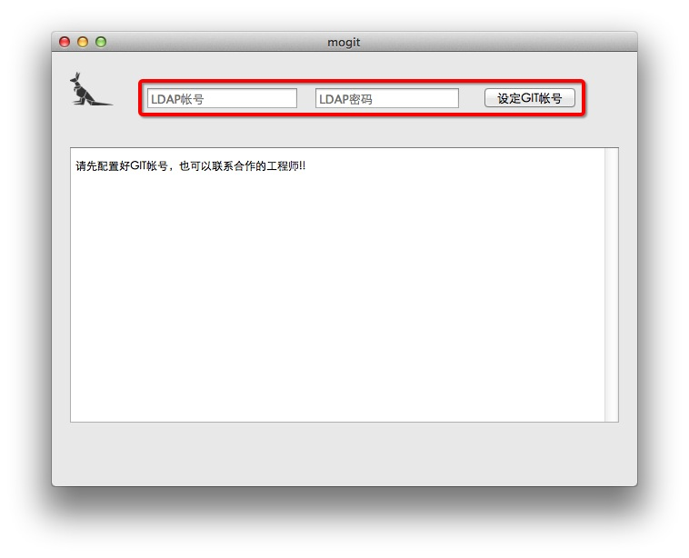
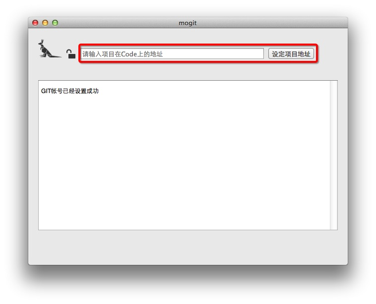
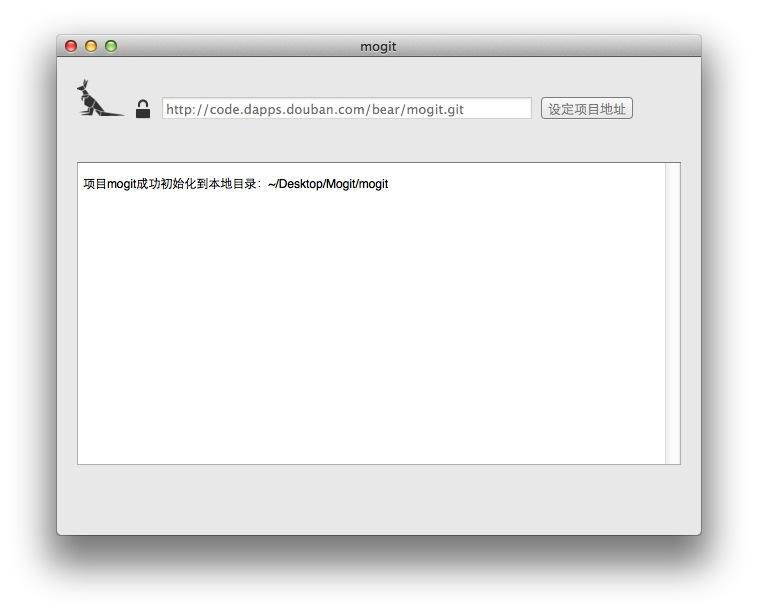
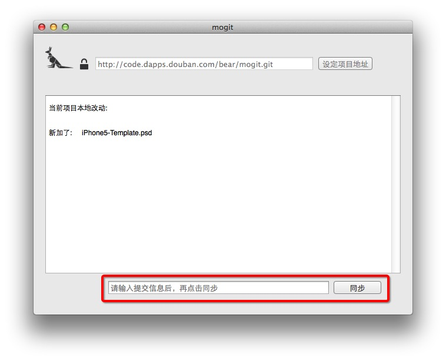

DoubanCode Git Toy
MoGIT项目是面向非开发人员的简化版 CODE 同步客户端。
立即下载
1.安装本地环境
下载最新的Git for Mac 本地下载 | 官网
2.设置MoGIT
-
按照提示输入你的LDAP帐号密码，点击设定。忘记了？

-
在图示位置输入工程师给你的Git地址，比如「http://code.dapps.douban.com/bear/mogit.git」，点击设定。

-
恭喜你！快去桌面的Mogit目录找你的项目开始添砖加瓦吧！

-
MoGIT中会显示你所做的改动，在红框位置输入本次提交的理由（必填)，点击同步之后就可以去项目主页看到了。

Tips
- 如需更换项目，点击「锁」。
- 如需更新本地内容，点击logo「袋鼠」。
- 使用过程中如果遇到了任何诡异的问题，请联系@bear或@whshang。
One More Thing
MoGIT只是协同开发第一步，完整体验GIT需要命令行或其他更强大的GIT工具。